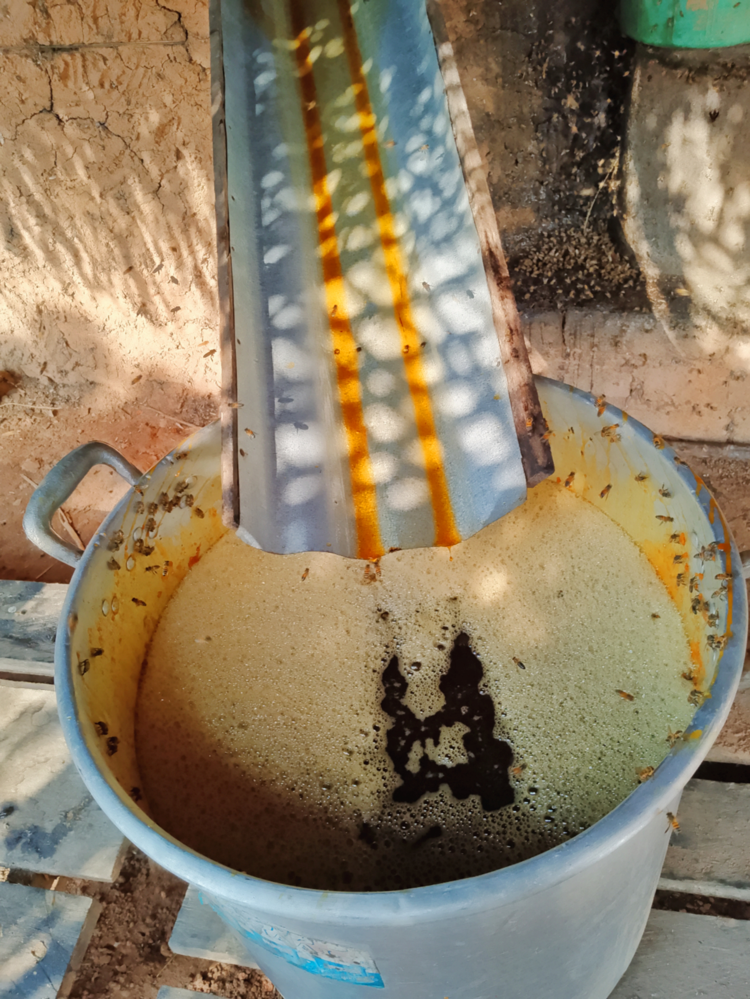

¿Cómo se elabora la Miel?
Para poder hacer la miel de caña primero se debe de poner la caña en el trapiche (tradicional o moderno) en este caso si utilizamos el trapiche tradicional, debemos de molerla con el timón (se necesita la fuerza de una yunta de bueyes) para así poder extraer el caldo de caña. Luego de sacar el caldo de caña se le echa en el fondo y mientras va hirviendo se le saca el llamado cachazo (lo sucio del caldo de caña) el cachazo se saca con una espumadera grande, hasta llegar al punto de miel, este proceso dura aproximadamente unas 6 o 8 horas.
